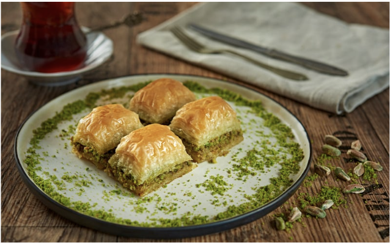

Welcome to the Top 5 Recipes
Discover the most popular recipes from around the world, each with a rich history and unique flavors. From classic Italian dishes to modern Asian cuisine,
these recipes are sure to delight your taste buds and inspire your cooking adventures.
NO. 1
Spaghetti Carbonara
A classic Italian pasta dish made with eggs, cheese, pancetta, and pepper. Originating in Rome, Carbonara is a post World War II classic believed to have
been influenced by American soldiers' rations of bacon and eggs.
Click here to see the Spaghetti Carbonara recipe.

NO. 2
Chicken Tikka Masala
A popular Indian dish consisting of roasted marinated chicken in a spiced curry sauce. It is believed to have been created in the UK by Indian chefs, blending Indian and British culinary traditions.Chicken Tikka Masala is often considered a symbol of modern multicultural Britain.
Click here to see the Chicken Tikka Masala recipe.

NO. 3
Lemon Butter
Creamy and tangy with a gorgeous lemon hue, lemon butter is also known as lemon curd and is an old-school spread that can be added to both sweet and savoury dishes. Easy to prepare, and totally addictive, you’ll find yourself whipping up a new batch of this recipe on a regular basis.
Click here to see the lemon butter recipe.

NO. 4
Baklava
A rich, sweet pastry made of layers of filo dough filled with chopped nuts and sweetened with honey or syrup. Originating from the Ottoman Empire, baklava is a beloved dessert in many Middle Eastern and Balkan countries, symbolizing hospitality and celebration.
Click here to see the Baklava recipe.
NO. 5
Churros
Churros are a popular Spanish and Latin American pastry, made from fried dough and often sprinkled with sugar or dipped in chocolate. They are believed to have originated from Spanish shepherds who created a simple dough that could be easily cooked over an open fire. Today, churros are enjoyed worldwide, often served at fairs and festivals.
Click here to see the Churros recipe.